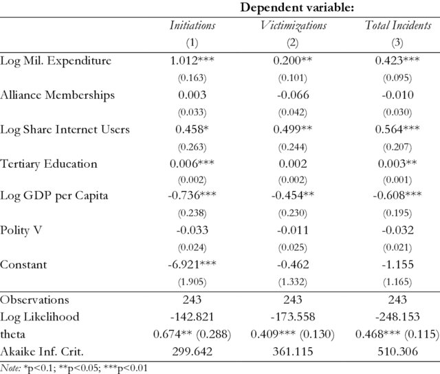
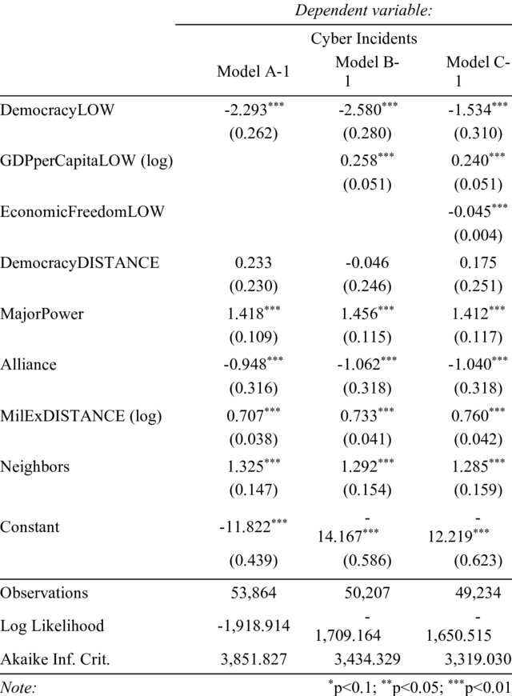

Dynamics of State Sponsored Cyberattacks
Master's Thesis Project
As I wrote two master's theses on similar topics, this project description combines
both data analyses. Both papers
were eventually published and can be read here
and here.
My first thesis presented an examination of the dynamics of interstate cyber disputes.
More precisely, it explored which country-level factors will lead to a larger/smaller number of cyber
incidents involving that state. A number of different predictors for cyber disputes were tested using
negative binomial regression analysis. I had to combine several datasets to obtain all variables
necessary for this analysis. The project was performed in R.

The regression table shows the coefficients for three models. Initiations regresses the independent variables on the number of
cyberattacks a state is confirmed to have initiated.
Victimizations regresses on the number of state sponsored cyberattacks a country has confirmedly suffered.
Total Incidents combines both. I will not delve into the details of the model and variables in this ePortfolio.
Obviously, many cyberattacks are never made public and many observations in the data (which was country-year-based)
contained no reported incident. Therefore, I controlled my findings by also running a zero-inflated negative binomial
regression. Still, I was dealing with very limited and underreported data.
There are four main takeaways. First, more conventional military
strength also leads a state to be more frequently involved in cyber incidents.
Second, countries that are better connected to the internet employ cyber operations more
often but they are also more appealing targets. Third, having a highly educated population
makes countries more prone to using cyber tactics. Fourth, the dynamics of cyber disputes
differ significantly from those of more conventional conflicts.
The second thesis explored the the Democratic and Capitalist Peace. These are a pair of theories based on the empirical observation
That democracies never go to war with one another. The Democratic Peace theory states (and I am simplifying dramatically) that democracies
view each other as legitimate and resolve their disputes with other democracies diplomatically.
By contrast, the Capitalist Peace theory argues that the observed peace between democratic countries is
actually due to the fact that democratic countries are usually also economically liberal. This means that they
tend to have closer economic ties and they lose our by fighting with each other. Therefore, peace between democracies
is not due to their democratic regime characteristics but due to their economic systems.
I decided to test whether the underlying observation also holds true for Cyberattacks and not just conventional warfare.
Thus, I replicated the statistical models used by Peace theorists but instead of using physical wars as the dependent
variable, I used state-vs-state cyberattacks.

This table shows the results of a logistic regression, performed in R. Again, I combined data from a variety of sources
in order to perform my analysis. I discovered two main conclusions:
First, democracy decreases the likelihood that two democratic states will experience cyber hostilities.
Similarly, more economic freedom will also reduce cyber conflict.
This suggests that both the democratic and the capitalist peace are observable in cyberspace.
I hope you enjoyed this (admittedly somewhat superficial) explanation of my master's projects. These were the first in-depth statistical analysis projects I have ever done. Despite a lot of self-doubt and anxiety (which is normal in academia), both projects were a lot of fun and incredible learning opportunities.